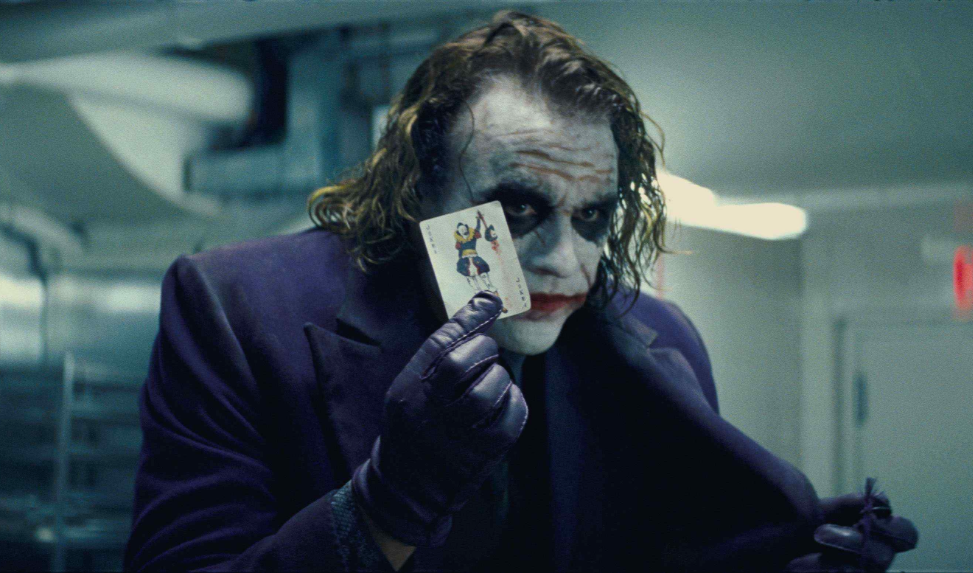
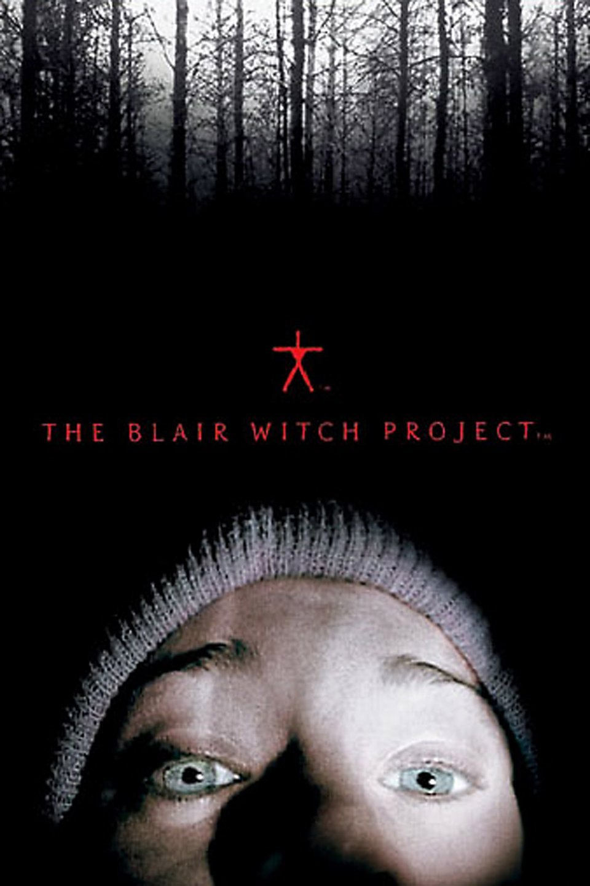

Miguel's Portfolio.
I am a software developer.
Click On my photo to check my linkedin profile if you need to contact me.

One of my favorite hobbies is to watch great movies, so here's a list of my preferred movies.
My favorite movies of all the time.
- Parasite

-
Parasite showcases class inequality at its finest, while covering feelings of love, care, and respect, along with their opposites of hate, anger, and disdain
Highlights greed and the desire for short term gain versus planning for long term success.
Exceptionally well written, intense storytelling, that is simple enough to follow yet features a greater level of depth among the context of the scenes
Calls out some obvious moments of what it wants the audience to think/feel but not in a distracting way.
- ScarFace

- Tony Montana (Al Pacino) stakes a claim on the drug trade in Miami. Viciously murdering anyone who stands in his way,
Tony eventually becomes the biggest drug lord in the state, controlling nearly all the cocaine that comes through Miami.
But increased pressure from the police, wars with Colombian drug cartels and his own drug-fueled paranoia serve to fuel the flames of his eventual downfall.
- The Dark Night

- The acting performances in this film are truly as great as they come.
Heath Ledgers infamous take on the Joker is undoubtedly one of the most captivating, disturbing, and iconic villain performances in film history.
That's why I decided to put his photo, representing the movie.
- Figth Club

- This movie defined me, I lost count of how many times I've watched it, at first I had no idea what was going on,
I could not believe the way David Fincher plays with your mind, only if you pay close attention you would understand that Edward Norton and Brad Pitt are actually the same person,
truly mind-blowing also one of the most controversial movies of all the time since project mayhem it was originally planned to reset debt causing a huge impact to credit card companies.
- The Blair Witch Project

- This is a great horror movie, it made me think it did happen in real life.
The way it was filmed, makes you think that it was some real footage that was found in the woods.
I remember I was investigating whether was real or not once I was done watching it.
Most definitely one of the best horror movies I have watched.
About Me. Contact Me.